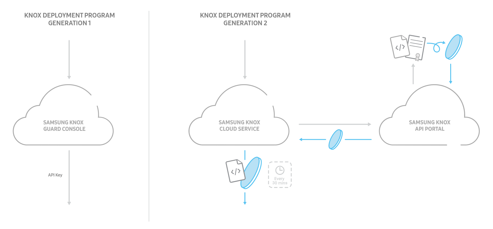

Comparing Gen2 and Gen1 Knox Deployment Program APIs
The Knox Deployment Program APIs allow participating carriers/resellers to integrate the features found on the Knox Deployment Program Portal with their own systems for verifying the ownership of the devices purchased by their customers using Knox cloud services such as Knox Configure and Knox Mobile Enrollment. The features include uploading and deleting device IDs (IMEIs/serial numbers).
In Knox Deployment Program APIs Gen2, the latest generation, the Knox Deployment Program APIs have been restructured to simplify your workflow and enhance API authentication security.
-
Participating carriers and resellers wishing to integrate the features found on the Knox Deployment Program portal are advised to use the Knox Deployment Program APIs Gen2. You can learn more about them and how to use those calls in the Gen2 integration guide.
-
If you would still like to use the previous generation of the Knox Deployment Program APIs, you can see its Gen1 integration guide. The Knox Deployment Program APIs Gen1 will continue to work and be supported for existing users.
Knox Deployment Program APIs Gen1 are only used for existing resellers who already have the Gen1 static apiKey. Otherwise, if you are not using the static key or you are a new reseller, please use the Knox Deployment Program APIs Gen2. You can move from Gen1 to Gen2 by applying to the Samsung Admin portal, but refrain from combining or interchanging between these two generations.
Authentication
In the Knox Deployment Program APIs Gen1, a static API license key called X-WSM-API-TOKEN is used. Since it is static, it never expires.
In the Knox Deployment Program APIs Gen2, the static API license key has been replaced with an authentication JSON Web Token called X-KNOX-APITOKEN. This token expires every 30 minutes, making it more secure than the Gen1 license key, which never expires. The token consists of a Client Identifier and unique public-private key pair.
To use the Gen2 APIs, follow the instructions in the Knox Cloud Authentication Guide to generate the new authentication token. After generating your new token, you can use it by including it as a header parameter in your HTTP requests.

REST API Comparison
The table bellow illustrates how APIs in the Knox Deployment Program APIs Gen1 map to those in Gen2:
| Feature | Gen1 | Gen2 |
|---|---|---|
| Upload/Save Devices | PUT /bulkenroll/v1/reseller/devices Or PUT /bulkenroll/v2/reseller/devices |
PUT /kcs/v1/rp/devices/upload |
| Delete Devices | PUT /bulkenroll/v1/reseller/devices/delete | PUT /kcs/v1/rp/devices/delete |
| Query Transaction Status | GET /bulkenroll/v1/reseller/devices/status Or GET /bulkenroll/v2/reseller/devices/status |
GET /kcs/v1/rp/devices/status |
| Retrieve Customer Details | POST /bulkenroll/v1/reseller/customers | GET /kcs/v1/rp/customers |
| Retrieve Resellers Details | POST /bulkenroll/v1/reseller/resellers | NA |
| Retrieve a List of Devices | GET /bulkenroll/v1/reseller/devices | GET /kcs/v1/rp/devices |
Device Provisioning
In Knox Deployment Program APIs Gen1, two systems of provisioning devices existed — single-tier and two-tier. Different request parameters were used for saving devices and querying transaction status.
Each system had a different use case:
- Single-tier — A single reseller provisions devices for a customer.
- Two-tier — A vendor provisions devices for a customer via a distributor. A vendorId must be specified in the request body.
In Knox Deployment Program APIs Gen2, we simplify the workflow such that there is no distinction between tiers. You use the same APIs for either system or use case, with the exception that you provide different request parameters for certain APIs.
On this page
Is this page helpful?